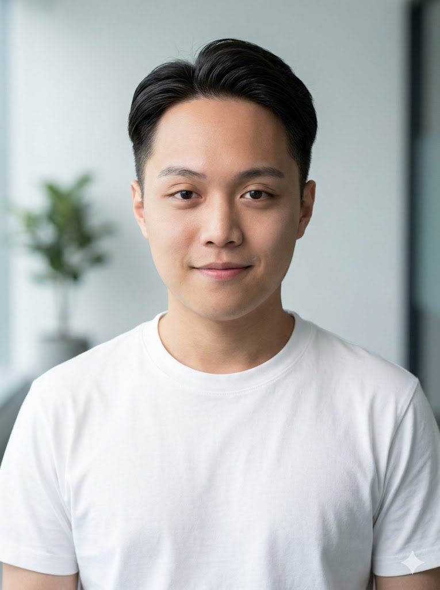

HSIANG KUN KO
NCU CSIE
Experience
- GDG on Campus
Technical Core Team
- Network Administrator
NCU Service-Learning Development Center
- Teaching Assistant
Open Source Software Development
Projects
- QuantDashboard AI
Full-stack quantitative platform for the Taiwan stock market.
-
Street Program
Designed and implemented an end-to-end pipeline that crawls Google Street View image,
using BFS and VLM models for structural analysis.
More
- NCU Dogs Club
Vice President
- English Workshop
Speaker and Session Facilitator
- MSI SWE Intern
Upcoming !!!